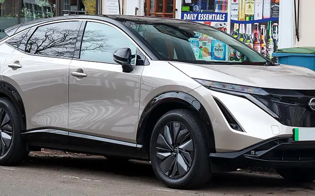

Par Motor › Precios por modelo › Nissan Ariya
Precio de segunda mano · noviembre de 2026¿Cuánto vale un Nissan Ariya de segunda mano?

Precio justo estimado de un Nissan Ariya usado en España, año por año, con los kilómetros normales para su edad y en buen estado: de 26.400 € a 52.000 €. Para tasar el tuyo con sus kilómetros reales y su estado, usa el tasador gratis.
Precios del Nissan Ariya por año
Ariya (2022–hoy)
Precio de nuevo: 63 kWh 218 CV, 47.000 € · 87 kWh 242 CV, 54.000 € · e-4ORCE 87 kWh 306 CV, 60.000 €
| Año | Km normales | 63 kWh 218 CV · Eléctrico | 87 kWh 242 CV · Eléctrico | e-4ORCE 87 kWh 306 CV · Eléctrico |
|---|---|---|---|---|
| 2026 | 5.000 km | 40.800 € | 46.800 € | 52.000 € |
| 2025 | 20.000 km | 33.900 € | 39.000 € | 43.300 € |
| 2024 | 35.000 km | 31.200 € | 35.900 € | 39.900 € |
| 2023 | 50.000 km | 28.700 € | 33.000 € | 36.600 € |
| 2022 | 65.000 km | 26.400 € | 30.300 € | 33.700 € |
Kilómetros normales: 15.000 al año en gasolina, híbridos y eléctricos, y 20.000 en diésel, con un máximo de 100.000 km (por encima no tasamos: el precio depende demasiado del historial de cada coche). Cifras redondeadas a 100 €.
Preguntas frecuentes
¿Cuánto vale un Nissan Ariya de segunda mano?
Según el año, la versión y los kilómetros, un Nissan Ariya usado vale hoy de 26.400 € a 52.000 € en España. El más barato de nuestra tabla es un 63 kWh de 2022 (26.400 €) y el más caro un e-4ORCE 87 kWh de 2026 (52.000 €). Son precios justos estimados entre particulares y profesionales, con los kilómetros normales para su edad y en buen estado.
¿Cuánto valor pierde un Nissan Ariya al año?
Con unos años encima, un Nissan Ariya pierde alrededor de un 8 % de su valor cada año (calculado sobre el 63 kWh de la generación Ariya). Los primeros años la caída es mayor y a partir de los 70.000 km se acelera.
¿Qué motorizaciones tiene el Nissan Ariya?
En nuestra base de datos hay versiones eléctrico, en 1 generación: Ariya.
¿Cómo sé si me piden demasiado por un Nissan Ariya?
Abre el tasador de Par Motor, elige el Nissan Ariya, el año y los kilómetros reales, y escribe lo que te piden. Te diremos si está por debajo del precio justo (chollo) o por encima (caro). Es gratis y no pide registro ni matrícula.
Otros Nissan
Compara su coste real
El precio de compra es solo una parte. Mira cuánto te costaría al mes con combustible, seguro, neumáticos, mantenimiento y lo que pierde de valor.
Abrir el comparador →